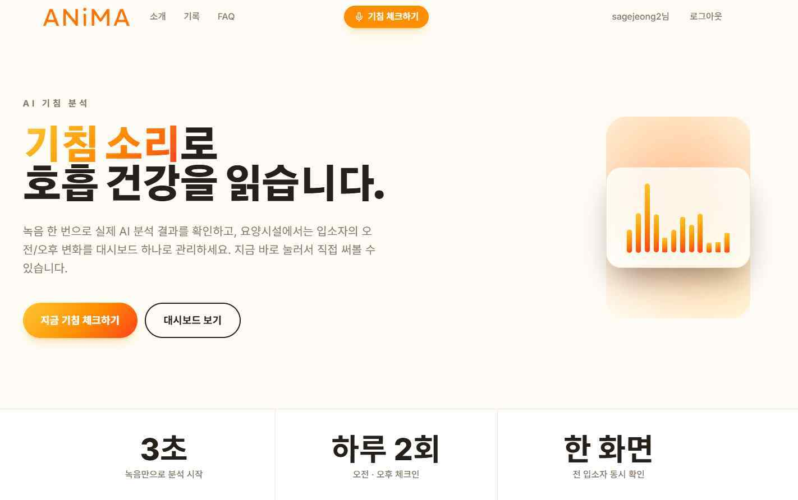
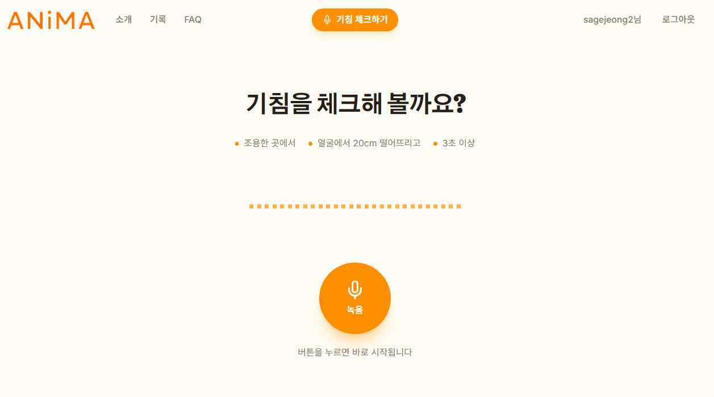
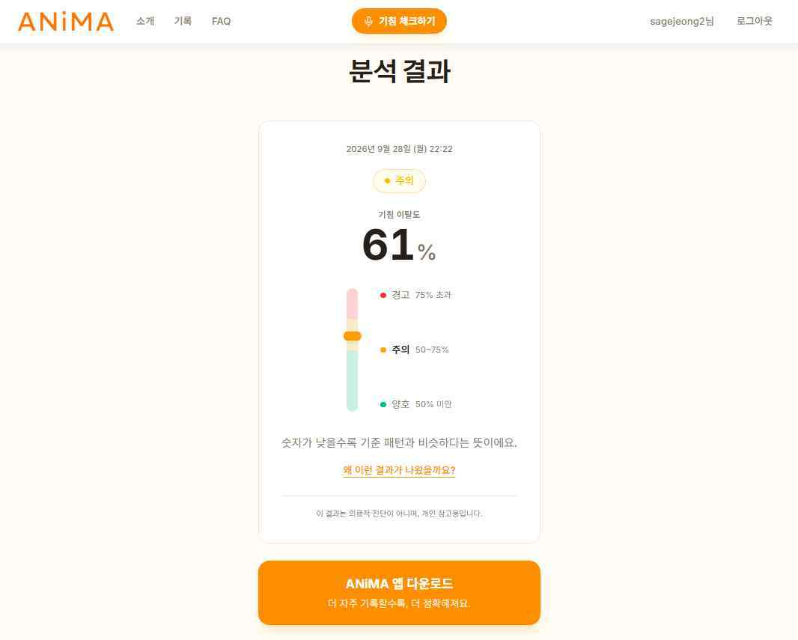
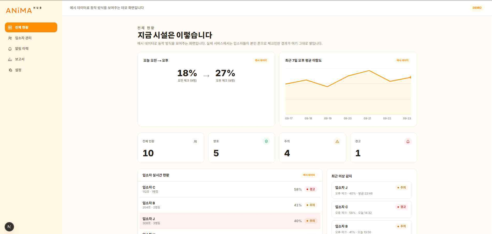

ANiMA 앱
기침 녹음, 분석 결과, 그날의 상황 기록, 히스토리와 PDF 리포트로 이어집니다.
FLUTTER · LOCAL DB앱과 웹으로 기침 소리를 분석하고,
그날의 상황과 지난 기록을 함께 살펴봅니다.
ANiMA는 소리의 차이를 기록하는 프로젝트입니다.
연구·교육용 프로토타입 · 분석값은 질병 진단을 의미하지 않습니다.
앱에서 쌓는 기록동작 · 실사용 테스트 중
브라우저에서 분석앱 설치 없이 이용하는 웹
여러 기록을 한눈에기관용 대시보드 데모
2학기에는 이미 동작하는 기능을 다듬고 있습니다. 앱, 웹 분석, 대시보드와 소개 페이지의 현재 단계를 구분해 소개합니다.
기침 녹음, 분석 결과, 그날의 상황 기록, 히스토리와 PDF 리포트로 이어집니다.
FLUTTER · LOCAL DB앱을 설치하지 않고 브라우저에서 기침 소리를 입력하고 분석하는 기능입니다.
BROWSER EXPERIENCE여러 사람의 기록과 표시 상태를 한 화면에서 살펴봅니다. 실데이터 연동은 검토 단계입니다.
MULTI-USER DEMO지금 보고 있는 페이지입니다. 구현 화면, 분석 과정, 개발 기록과 팀을 소개합니다.
GITHUB PAGES2학기 발표자료에 담긴 웹 분석과 대시보드 화면입니다. 이미지를 누르면 원본 크기로 볼 수 있습니다.

기침을 기록하고 분석하는 기능으로 안내합니다.

별도 앱 설치 없이 음성을 입력하는 화면입니다.

입력한 기침의 분석 결과를 웹에서 확인합니다.
2026년 2학기 발표자료의 웹 분석 화면 · 표시된 수치와 상태는 시연 예시입니다.
전체 현황, 개별 기록과 상태 표시를 한눈에 확인하는 대시보드입니다. 발표자료에서는 체크 결과와 업데이트를 보여주는 데모 화면으로 소개했습니다.
현재 화면은 데모 데이터입니다. 실제 데이터와의 연동은 앞으로 검토할 항목입니다.
발표자료의 서비스 주소 ↗
로컬 DB를 사용하는 앱에서 기록을 쌓고 다시 살펴보는 흐름을 구현했습니다. 사용성 개선 후 앱 출시를 계획하고 있습니다.
발표자료의 앱 시연 영상 ↗이전 중간발표의 시연 화면입니다. PDF 보고서 예시 이미지는 더미 데이터 20건으로 만든 화면이며, 다운로드용 PDF 문서가 아닙니다.
기침 여부를 확인하는 첫 단계와 참조 분포와의 거리를 계산하는 두 번째 단계를 연결합니다.
STFT 스펙트로그램을 2D CNN 모델로 판별합니다.
특징을 추출해 마할라노비스 거리와 이탈도를 계산합니다.
앱이나 웹에서 기침 소리를 입력합니다. 기록의 출발점이 되는 음향을 확보합니다.
AUDIO INPUT분석에 맞게 음성을 정리하고, 입력한 녹음의 품질을 확인합니다.
PREPROCESSINGSTFT로 소리를 시간과 주파수 정보로 바꿔 모델이 읽을 수 있는 형태로 표현합니다.
STFT / SPECTROGRAM2D CNN 모델이 입력을 기침과 비기침으로 구분합니다.
COUGH / NON-COUGH기침의 음향 특징과 연구용 참조 분포 사이의 마할라노비스 거리를 계산합니다.
MAHALANOBIS DISTANCE이탈도와 신뢰도를 확인하고, 앱에서는 상황 기록·히스토리·PDF로 이어집니다.
RESULT / HISTORY2학기 발표자료에서 보고한 분류 성능입니다. 기침 소리를 구분하는 모델의 결과로 읽어야 합니다.
출처: 2026년 2학기 발표자료, 모델 성능. 자체 기침·비기침 분류 실험 결과이며 질병 진단 정확도나 변화 감지의 임상 성능이 아닙니다. 학습·평가 데이터 분리 방식과 외부 검증 결과는 해당 자료에 제시되지 않았습니다.
소리가 참조 분포와 얼마나 다른지, 입력한 분석 결과를 어떻게 살펴볼지 구분합니다.
현재는 연구용 기침 참조 분포와 비교합니다. COUGHVID를 활용하며, 이전 개발 기록에는 healthy_cough 표본으로 참조 분포를 구성하는 과정이 담겨 있습니다.
그림은 설명용 개념도입니다. 개인별 기록을 바탕으로 만드는 맞춤 기준 분포는 향후 계획이며, 현재 기능과 구분합니다.
앱의 결과 표시
프로토타입에서 사용하는 이탈도 표시 단계입니다. 임상적 건강 상태나 질병 위험도 등급으로 사용할 수 없습니다.
서버의 메모리와 실행 제약을 거치며, 현재는 태블릿 기반 서버와 Cloudflare Tunnel을 연결하는 구성으로 옮겼습니다.
메모리 부족과 슬립으로 실행 환경의 제약을 확인했습니다.
1코어·1GB 환경의 자원 한계를 겪었습니다.
Termux와 Ubuntu 환경을 사용합니다.
Cloudflare Tunnel을 통해 서비스 주소와 연결합니다.
2026년 2학기 발표자료의 서버 구성 기준 · 이 소개 페이지는 GitHub Pages에서 제공되며, 기침 음성을 직접 수집하거나 분석하지 않습니다.
모델과 데이터 수집에서 시작해 앱·웹·대시보드로 넓혀 왔습니다. 현재는 사용성 개선과 다음 검증 단계를 준비합니다.
모델 개발과 데이터 수집을 시작했습니다.
수행계획을 정리하고 분야별 역할을 나눴습니다.
논문 발표와 우수상 수상 기록을 남겼습니다.
앱 테스트를 진행하고 공모전에 도전했습니다.
웹·대시보드를 개발하고 서버를 이전했습니다.
하드웨어 개발을 중단하고 앱·웹 완성도에 집중합니다.
개인별 기침 기록을 바탕으로 비교 기준을 만드는 기능을 연구합니다. 한국인 기침 데이터 수집도 향후 과제입니다.
데모 화면에서 다음 단계로 나아가기 위해, 실제 기록을 연결하는 방법을 검토합니다.
실사용 테스트에서 얻은 피드백으로 앱과 웹을 다듬고, 앱 출시를 준비합니다.
ANiMA는 기침 음향의 차이와 기록을 살펴보는 연구·교육용 프로토타입입니다. 홈페이지는 프로젝트의 개발 내용을 소개합니다.
2026년 2학기 발표자료에 담긴 팀 구성입니다.
AI 모델 개발 · 데이터 전처리 · 기획분석 모델과 데이터, 프로젝트 방향을 담당합니다.
앱·웹 프런트엔드 · DB 설계사용자가 기록하고 결과를 확인하는 화면과 데이터 구조를 담당합니다.
서버 · 인프라분석 기능을 연결하고 실행하는 서버 환경을 담당합니다.
웹 디자인 · 앱 사용성 테스트웹 화면의 디자인과 앱을 사용하는 경험을 점검합니다.
데이터 라벨링 · 소개 페이지 · 문서 관리프로젝트 데이터를 정리하고, 구현 내용과 개발 기록을 전달합니다.
이 페이지는 프로젝트 소개용입니다. 실제 분석 기능은 별도로 개발한 앱과 웹에 있으며, 발표자료의 서비스 주소는 animawith.cloud입니다.
2학기 발표자료에 제시된 자체 기침·비기침 분류 실험의 정확도입니다. 특정 질병을 진단하는 정확도가 아닙니다.
현재 소개된 분석은 연구용 기침 참조 분포와 비교하는 방식입니다. 개인의 기록으로 맞춤 기준 분포를 만드는 기능은 2학기 향후 계획입니다.
발표자료에 수록된 기관용 대시보드는 데모 데이터 화면입니다. 실제 데이터 연동은 검토 단계입니다.
2학기 발표자료에서는 하드웨어 개발을 중단하고, 동작하는 앱과 웹의 완성도에 집중한다고 설명합니다.
자료 기준으로 앱은 실사용 테스트 중입니다. 사용성 개선 후 출시하는 계획이며, 현재 소개 페이지에는 설치 파일을 제공하지 않습니다.